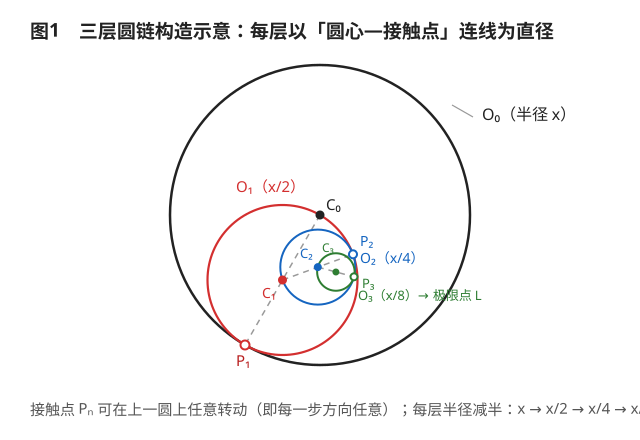
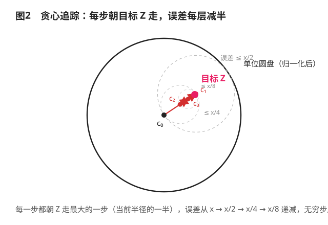
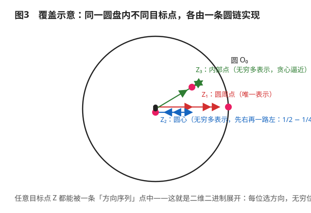

无穷直径圆链的极限点覆盖定理（暨"半个半个地画圆能否点满整个圆盘"之研究）
Researcher: Dr.叶
No.3 Middle School Science and Technology Innovation Academy (No.3 AS) · 总策划
（本文为Rubbish期刊精选类学术垃圾）
摘要
本文考察如下无穷构造：于圆 $O_0$（半径 $x$）上任取一点，将其与圆心连成线段，并以该线段为直径作圆 $O_1$；此后递归重复，且每一步的接触点可在上一圆上任意转动（等价于圆 $O_n$ 可绕 $O_{n-1}$ 之圆心任意旋转）。设圆链无穷延伸、末圆收缩为一点 $L$。本文证明：极限点 $L$ 可取遍整个闭圆盘 $\overline{O_0}$——圆周、内部任意点、乃至圆心本身皆可被表示，并给出贪心构造算法、"方向二进制展开"的解释，以及半径缩减比的临界性讨论。全文包含若干不必要的数学，请勿用于任何实际工程。
关键词：无穷圆链；直径构造；极限点；凸级数；贪心算法；方向二进制展开；有用但不确定
每一步：以前一个圆的圆心为起点，朝圆上任意一点连线，取中点当新圆心——所以每走一步，半径减半，方向随便挑。
这就好比二进制小数：小数点后每一位只有 0 或 1 两种选择，但位数无穷多，照样能精确写出 0 到 1 之间的任何数。这里每一层的"方向"就是一位"二进制数字"，层数无穷多，就能精确到达圆盘内任何一点。
怎么走到目标点 Z？贪心：每一步都朝 Z 走最大的一步（当前半径的一半），每走一步误差减半，无穷步后误差为 0。
连圆心都能到：先往右一步，再一路向左——$\frac12 - \frac14 - \frac18 - \cdots = 0$。
所以答案是：能！圆内（含圆周）任何一点都可以被这条无穷圆链表示出来。
1. 问题的严格化
设圆 $O_0$ 的圆心为 $C_0$、半径为 $r_0 = x$。构造规则可形式化如下：
- 第 $n$ 步：在圆 $O_{n-1}$ 的圆周上任取一点 $P_n$（即"接触点"，可绕 $C_{n-1}$ 任意转动）；
- 以线段 $C_{n-1}P_n$ 为直径作圆 $O_n$，于是 $O_n$ 的圆心 $C_n = \dfrac{C_{n-1} + P_n}{2}$，半径 $r_n = \dfrac{r_{n-1}}{2} = \dfrac{x}{2^n}$；
- 易见 $O_n$ 过 $C_{n-1}$（$O_{n-1}$ 的圆心在其圆周上），且与 $O_{n-1}$ 内切于点 $P_n$，故 $O_n \subset O_{n-1}$。
圆嵌套且半径趋于零，故极限点 $L = \lim_{n \to \infty} C_n$ 存在且唯一。"最后一个圆为点"的科学表述即 $r_n \to 0$、圆链收缩于 $L$。
原问题：对圆 $O_0$ 上（或其内部）任意指定的点 $Z$，是否存在一条圆链使得 $L = Z$？

图1：三层圆链构造示意（$O_0, O_1, O_2, O_3$，接触点 $P_1, P_2, P_3$，半径逐层减半）
2. 关键化简：圆链 ⇔ 单位向量级数
令 $u_n = \dfrac{P_n - C_{n-1}}{r_{n-1}}$，即"第 $n$ 次转动的方向"——一个单位向量。则由递推式：
$$C_n = C_{n-1} + \frac{x}{2^n}\, u_n, \qquad L = x \sum_{n=1}^{\infty} \frac{u_n}{2^n}.$$
反之，任意单位向量序列 $\{u_n\}$ 均可翻译回一条圆链（令 $P_n = C_{n-1} + r_{n-1} u_n$ 即可）。于是原问题化为：
集合 $\left\{ \sum_{n=1}^{\infty} \dfrac{u_n}{2^n} : u_n \in S^1 \right\}$ 到底有多大？
其中 $S^1$ 为单位圆周。换言之，圆链极限点全体 = 单位向量"凸级数"的像集。
3. 主定理与两种证明
定理 1（极限点覆盖定理）：
$$\left\{ \sum_{n=1}^{\infty} \frac{u_n}{2^n} : u_n \in S^1 \right\} = \overline{D},$$
其中 $\overline{D}$ 为闭单位圆盘。因此圆链极限点恰可取遍整个闭圆盘 $\overline{O_0}$——圆周、内部、圆心，一个不落。
证明 A（凸级数，优雅版）
权重 $\{2^{-n}\}$ 之和恰为 $1$，故 $L/x$ 是单位圆周上点的"凸级数"（convex series）。显然有 $\left|L\right|/x \le \sum 2^{-n} = 1$，故像集含于闭单位圆盘。反向：单位圆盘的闭凸包即其自身，而任一点 $z \in \overline{D}$ 可写成圆周点的凸组合 $z = \sum_i \alpha_i v_i$；将每个系数 $\alpha_i$ 作二进制展开 $\alpha_i = \sum_{k} 2^{-n_k}$，把 $v_i$ 安放在对应编号的方向槽位上，即得 $z = \sum_n u_n / 2^n$。由紧性可知像集为闭集，故像集 = 闭单位圆盘。∎
证明 B（贪心归纳，操作版）
任给目标 $z$，$|z| \le 1$。取 $c_0 = 0$；第 $n$ 步：若 $c_{n-1} = z$ 则任取方向，否则令 $u_n = \dfrac{z - c_{n-1}}{|z - c_{n-1}|}$（指向目标），并令 $c_n = c_{n-1} + u_n / 2^n$。归纳断言：
$$|z - c_n| \le \frac{1}{2^n}.$$
$n = 0$ 时 $|z| \le 1$ 成立；若 $c_{n-1} = z$，则 $|z - c_n| = 1/2^n$ 成立；否则三点共线且方向朝 $z$，故
$$|z - c_n| = \left|\, |z - c_{n-1}| - \frac{1}{2^n} \,\right| \le \frac{1}{2^n},$$
其中末不等式由 $0 \le |z - c_{n-1}| \le 1/2^{n-1} = 2/2^n$ 保证。故 $c_n \to z$，翻译回圆链即得 $L = xz$。∎
至此，原问题的答案是：能。圆 $O_0$ 上（及内部）任意一点都可以被无穷圆链表示出来。

图2：贪心追踪示意（目标点 $Z$，折线 $c_0 \to c_1 \to c_2 \to c_3$ 每步指向 $Z$，误差按 $1/2^n$ 收敛）
4. 唯一性与"方向二进制展开"
4.1 圆周上的点：唯一表示
若 $|L| = x$，则三角不等式 $\sum |u_n|/2^n \ge |L|/x = 1 = \sum 1/2^n$ 取等号，故每个 $u_n$ 必须同向。边界点恰有一条链（当然，全部方向一致）。
4.2 圆心：不是"洞"，能精确到达
取 $u_1 = (1,0)$，$u_n = (-1,0)\ (n \ge 2)$，则
$$\frac{L}{x} = \frac{1}{2} - \frac{1}{4} - \left(\frac{1}{8} + \frac{1}{16} + \cdots\right) = \frac{1}{2} - \frac{1}{4} - \frac{1}{4} = 0.$$
所以圆心也能被"点"到——第一步先往右走半格，第二步掉头，此后一路向左，恰好停在原点。直觉上最像"洞"的点，反而有无数种表示（前若干步可任意摆动，只要末段把残差精确归零）。
4.3 二进制类比
权重 $2^{-n}$ 恰好对应二进制小数的第 $n$ 位：十进制里"每一位选 0 或 1"，这里"每一层选一个方向"。圆链即点的二维二进制展开，映射（方向序列）$\to$（极限点）是连续满射，把无穷维选择压成一个平面点。
5. 构造算法与实例
算法 1（贪心圆链）：给定目标 $Z \in \overline{O_0}$。初始 $C_0$ 为 $O_0$ 圆心；对 $n = 1, 2, \dots$：若 $C_{n-1} = Z$ 任取方向，否则取 $u_n$ 为 $Z - C_{n-1}$ 的方向；令 $P_n = C_{n-1} + (x/2^{n-1}) u_n$，以 $C_{n-1}P_n$ 为直径作 $O_n$。则第 $n$ 层后误差 $|Z - C_n| \le x/2^n$，极限即为 $Z$。
- 例 1（圆周点 $Z = (x, 0)$）：全部方向向右，$L = x(1/2 + 1/4 + \cdots) = x$。✓
- 例 2（圆心 $Z = (0,0)$）：右、左、左、左……，$L/x = 1/2 - 1/4 - 1/8 - \cdots = 0$。✓
- 例 3（中点 $Z = (x/2, 0)$）：右、左、右、右、右……，$L/x = 1/2 - 1/4 + (1/8 + 1/16 + \cdots) = 1/2$。✓
- 例 4（一般内点）：按贪心方向走即可，前四层肉眼可见，后面的交给想象力。

图3：覆盖示意（同一圆盘内，圆周点、圆心、内部点各由一条不同颜色的圆链实现）
6. 临界性与推广（展望）
- 三维推广：把"圆"换成"球"，凸级数论证原样照搬，结论不变——闭球内任意点皆可表示。
- 临界半径比：若改为 $r_n = q\, r_{n-1}$（$q \in (0,1)$），则极限点最远可达 $x \cdot \frac{1/2}{1-q}$。圆链嵌套要求 $q \le 1/2$；$q \lt 1/2$ 时只能覆盖半径 $\frac{x}{2(1-q)} \lt x$ 的小圆盘，覆盖不了全盘；$q = 1/2$ 恰是"能点满整个圆盘"的临界比；$q \gt 1/2$ 时圆不嵌套，"最后一个圆"未必存在，涉嫌物理超速，不讨论。
- 分形方向：若第 $n$ 步只允许有限个方向，极限集退化为 von Koch / Sierpiński 类自相似集，留待下一期（如果还有 Token）。
- 工程应用：暂无。符合本刊定位。
7. 结论
用无穷个"半个半个"的圆，可以精确表示圆盘内任意一点——圆周点唯一表示，圆心与内点无限多种表示，贪心算法误差每层减半。本质上是两件事：单位向量凸级数的像集等于闭凸包，以及二进制展开的二维化。建议读者亲手画到第 4 层就放弃，剩下的交给想象力与圆规的寿命。
致谢：感谢圆规没有在第三层罢工；感谢 $q = 1/2$ 这个临界值，让我们第一次觉得"二分之一"如此重要。